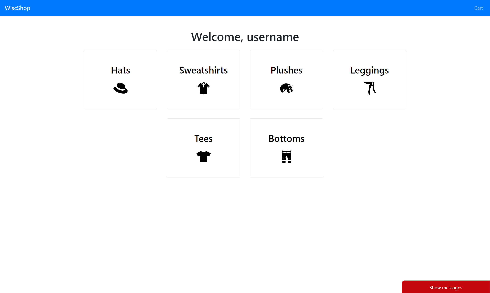
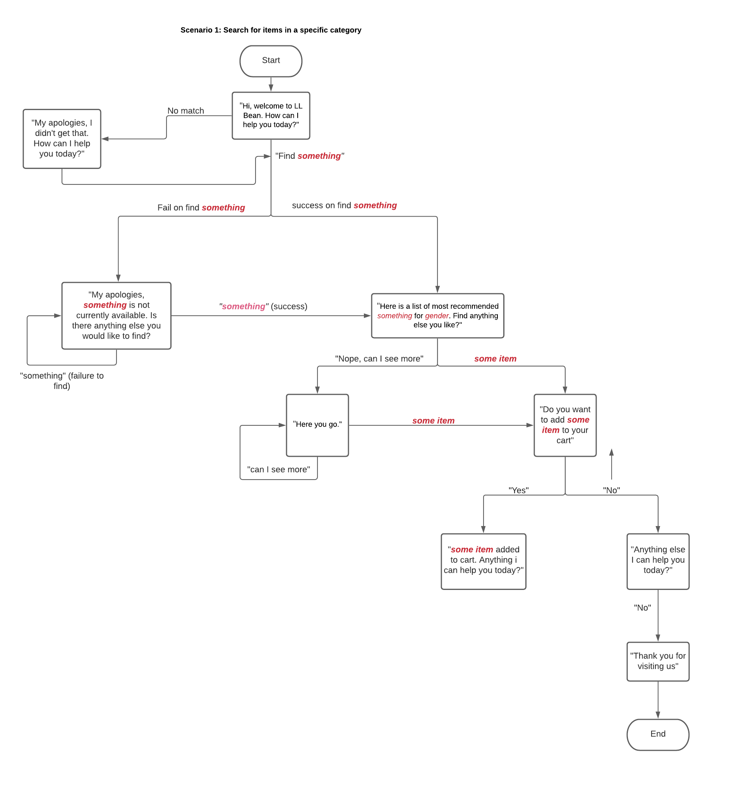

Shopping Assistant
Designing and building a chat bot experience for shoppers

01/ Overview
As Natural Language Processing (NLP) gets better in recent years, there is an up trend in adopting conversational agent in home devices and customer support. Traditional prototype methods are unable to be utilized in designing conversational agents since it relies on our tacit knowledge. Luckily, Experience Prototype seem to be a great fit to prototype chat bots. In this project, I will be using experience prototyping methods such as bodystorming to design a conversational agent for a clothing retail website, and implement it using Google's DialogFlow. After that, a simple usability test was performed as a practice.
02/ Experience Prototype - Bodystorming
Designing a conversational interface is particularly challenging as conventional prototype methods do not work, and our understanding of conversation is part of our tacit knowledge. Hence, experience prototype can help solve this challenge.
Context
Users interact with a conversational shopping assistant embedded within a clothing retail website.
Scenarios & Design Goals
Scenario 1: Searching for items in a specific category
Return a list of best reviewed products in the category.
Scenario 2: View items in their cart
Inform the user about the name of the products, quantity of those products in their cart, sorted by time added.
Scenario 3: Purchase items in cart
Confirm with user items in their cart, and proceed to checkout.
Scenario 4: Searching for a specific product
Return the general information about the product such as price, availability, and ratings.
Scenario 5: Adding a product into the cart
Add the specified product to the user's cart based on the quantity provided, and reaffirms that to the user.
Scenario 6: Narrowing down a search
Show only the products that fits the tags or filters specified by the user.
Scenario 7: Inquiring about a product
Provide the information about the product such as price, rating, and reviews to the user.
Scenario 8: Navigating around the website
Redirects to the page the user is seeking for.
Setting up environment
A pre-built clothing retail website was used.
Acting out interaction
A participant was invited to act out the interactions with the environment setted up above. The participant acted as a possible user querying the shopping assistant with questions and commands, while I acted as the conversational agent replying to the queries and commands made by the participant. Each scenarios was being acted out twice two simulate different experience of the same scenario. The session was recorded and transcribed to be analyzed later.
Insights
The session with the participant was transcribed and the interactions are being converted to a flowchart based on the patterns of interactions identified.
The flowchart of the first scenario - searching for items in a specific category is shown below.
03/ Implementation
First, the entities and intents are being created based on the results of experience prototype above. For each intent, at least ten training phrases are created to train the DialogFlow AI model and at least three responses from the agent are created. For each entities, at least five examples are created.
An example of intent, its' training phrases and response from agent:
Intent: Searching for a product
Training phrase: 'I would like to purchase the Supreme shirt.', 'Do you still have stocks for the Supreme shirt?'
Agent response: 'This is the Supreme shirt you are looking for', 'I found Supreme shirt, is this what you are looking for?'
An example of entity:
Entity: Quantity
Example: one, 2, all, some, a few
My responsibility is to write the webhook using JavaScript that is connected to DialogFlow. Since DialogFlow is a 'build once deploy everywhere' chat-bot, it is usable on multiple platforms such as on the web, messaging applications, and even phone calls.
A demonstration of the implementation can be viewed here:
04/ Usability Testing
A "mini" usability testing was performed. The goal of the testing is to get a taste of usability testing. Efficiency & Engagement of the system are the focus of the study. The two metrics used in the usability testing is time of task completion and SUS questionnaire. A test plan is then developed with clearly defined goals, scenarios, procedures, and metrics.
The usability testing was performed by two participants. Think aloud protocol was being encouraged throughout the usability test. After the test was completed, a brief interview with follow up questions were conducted.
Two Main Findings
1. Due to the constraint of the website, the website is simple enough and users tend to want to
interact with web page as they feel it is quicker for a simple system, i.e. agent is less efficient.
2. The agent is somewhat satisfying to use, but the user are unaware of the capabilities and
features of agent, and wrong intents matched confuses the user, which affects the user experience.
Design recommendations for the next iteration
1. Add a ‘help’ intent and have the agent return actions/queries that the user might be able to take
for them to better understand the capability of agent. In addition, provide a documentation or
in-depth help page to see a comprehensive list of features of the agent.
2. Provide suggestions to possible actions to the user while the user is asking for something. For
example, when the user asks about “I want to know more about Jump Around Shirt”, after
returning the results, let the user know possible queries they can take, i.e. ask about price,
reviews, and add item to cart.
3. Require the user to log in before using agent, even if queries that do not require log in. This
provides a more comprehensive and consistent user experience to the user.
05/ Conclusion and Reflections
From this project, I gained an understanding of the basics of experience prototyping and how it can be used. Though only the simplified version of usability testing was performed, I get a sense of how usability testing works and their importance. Unfortunately, due to COVID-19 restrictions, the experience prototyping and usability testing has to be performed virtually. However, it works out perfectly since in the real world, users would also be interacting with the chat bot in a virtual space.
I also got a chance to learn how to build a bot using DialogFlow, as well as design conventions for a conversational agent. Although the scenarios are not as complicated as most commercialized chat bots, being able to learn how to develop a chat bot without using pre-existing chat-bot builder is rewarding as the industry is still adopting the use of conversational agent to assist their customers.
Connect with me!
üëãüëãüëã
Open to any job and collaboration opportunities, or even a coffee chat! Feel free to connect with me with any of the options below.